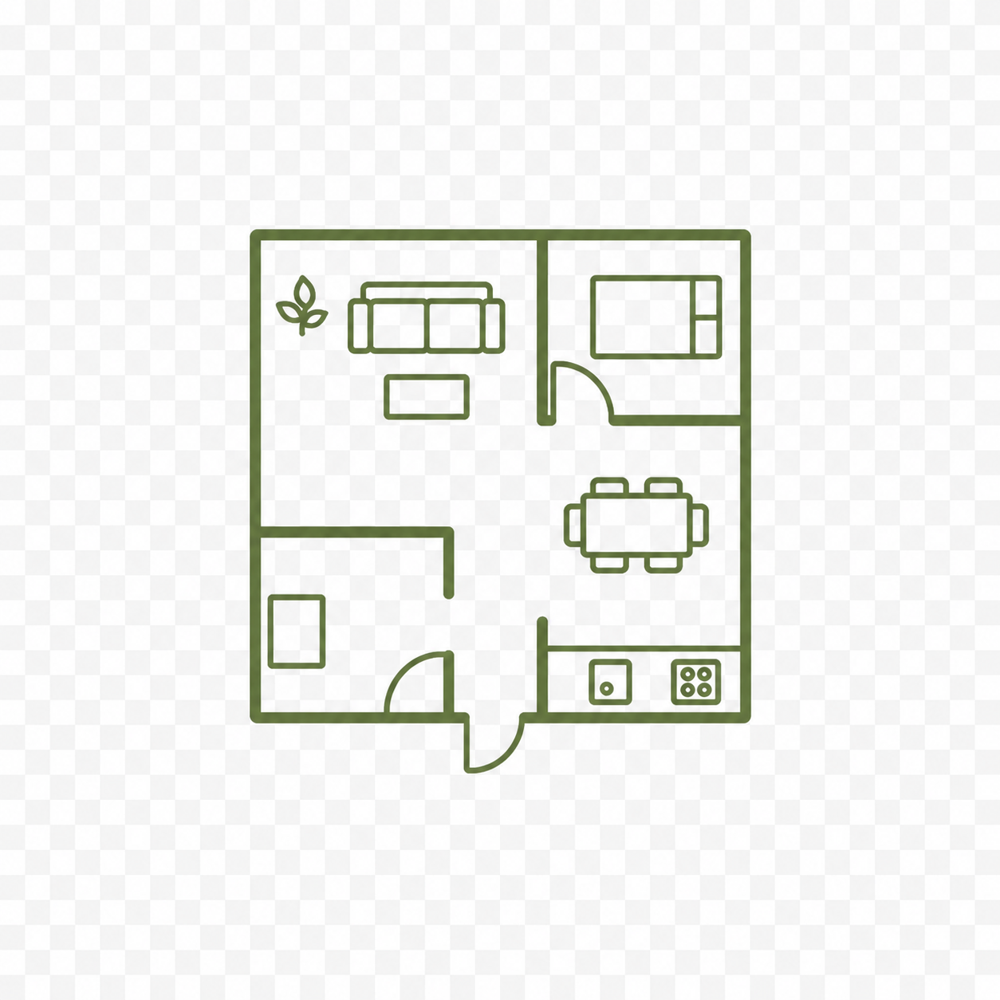
中古住宅を購入して、自然体にリノベーションしたい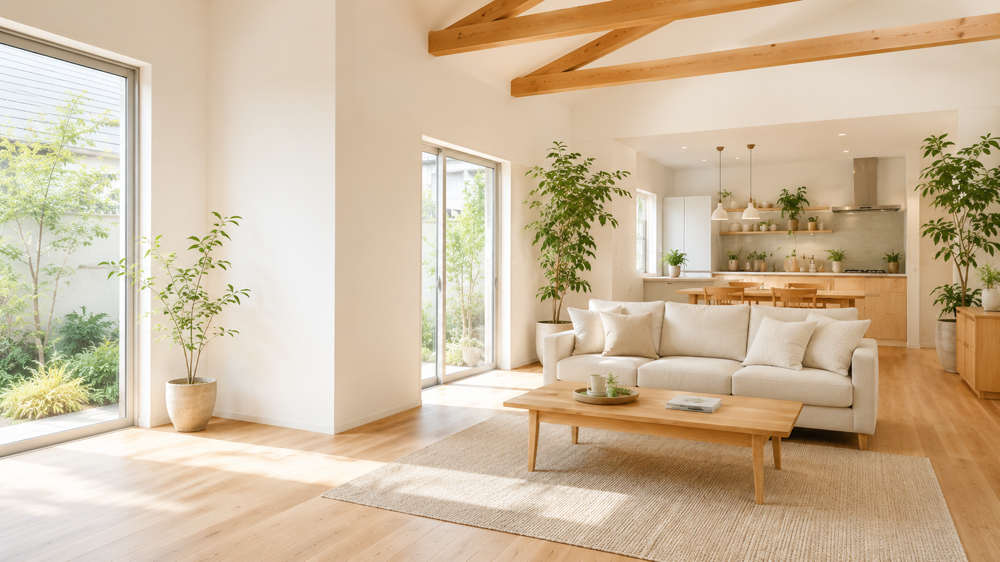
暮らしに、静かな余白を。
自然素材とシンプルな設計で、
毎日が心地よくなる住まいへ。
住まいを、暮らしに合わせて整える。
私たちは、ただ古い家を新しくするのではなく、ご家族の時間の使い方、光の入り方、収納や動線、素材の心地よさまで、暮らし全体を見つめ直し、自然体で心地よく、日々の暮らしをそっと支える住まいづくりを大切にしています。
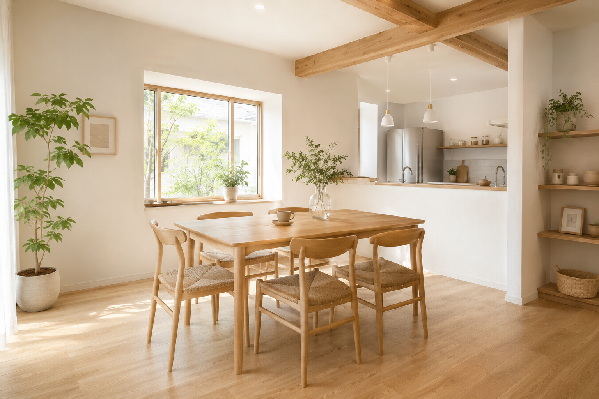
こんなお悩みありませんか
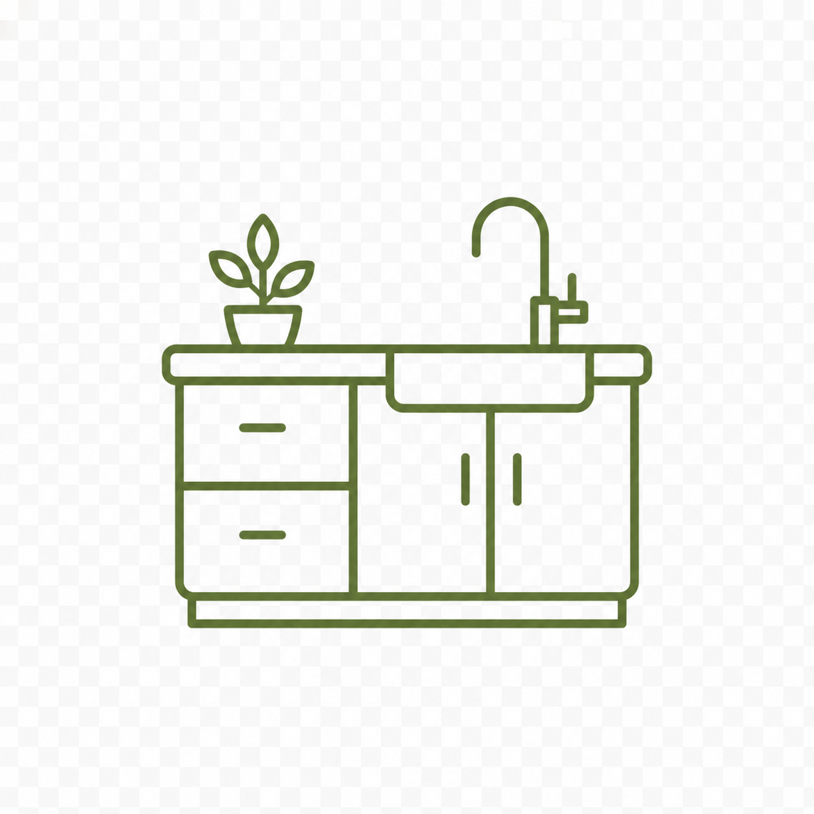
キッチンや水回りをもっと使いやすくしたいサービス内容
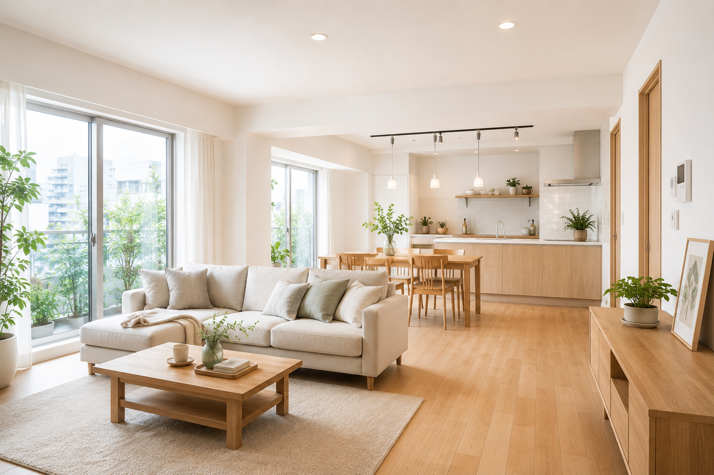
マンションリノベーション
間取り変更や収納改善で、快適な暮らしへ。
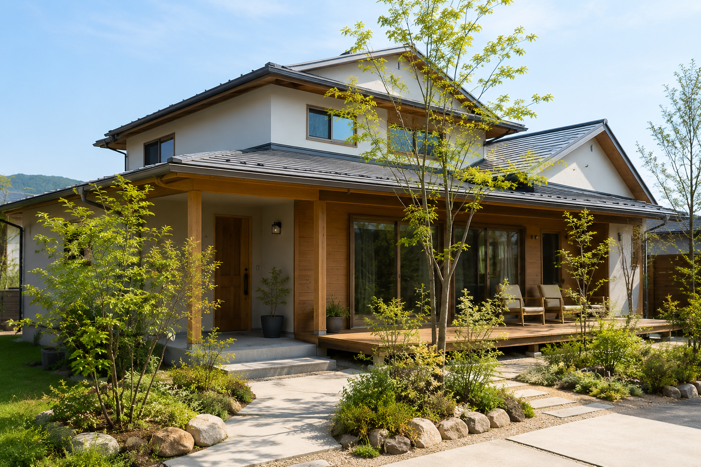
戸建てリノベーション
性能向上とデザインを両立した住まいに。
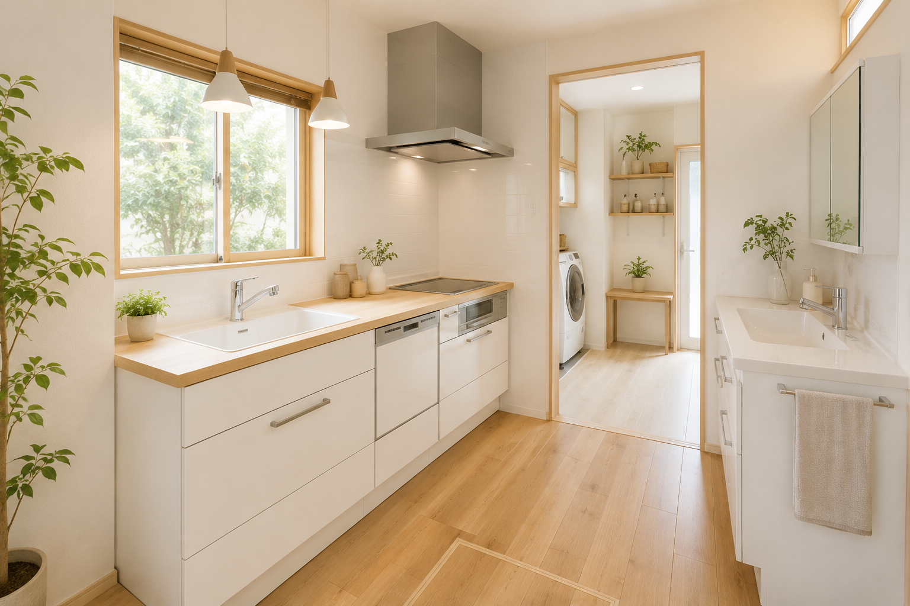
水回りリフォーム
キッチン・浴室・洗面・トイレを快適に。
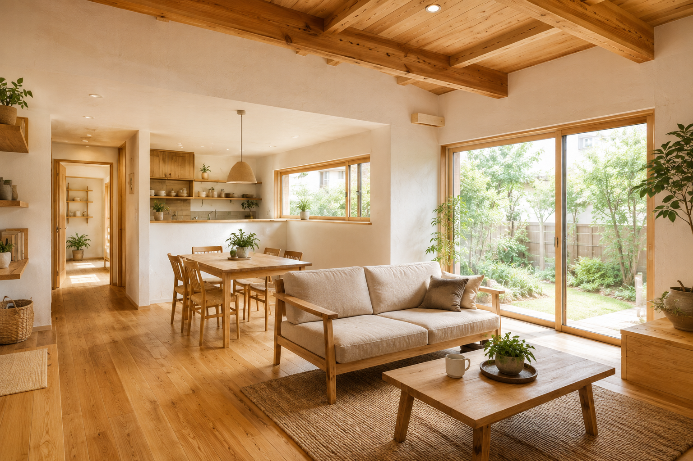
自然素材リノベーション
無垢材や漆喰など自然素材を活かした空間。
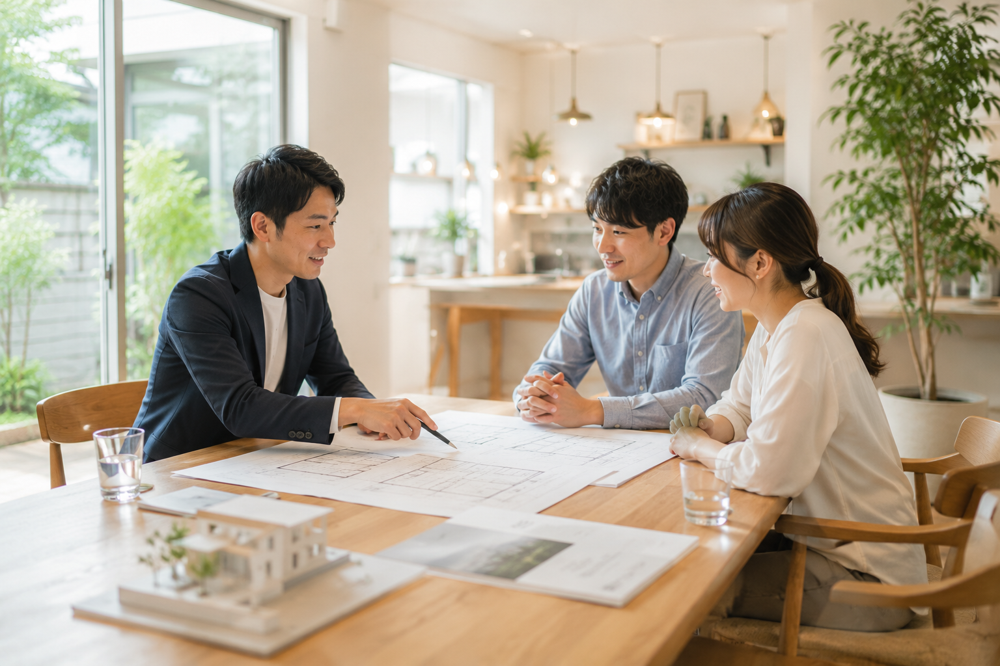
中古物件購入＋リノベ相談
物件探しから資金計画・リノベまでサポート。
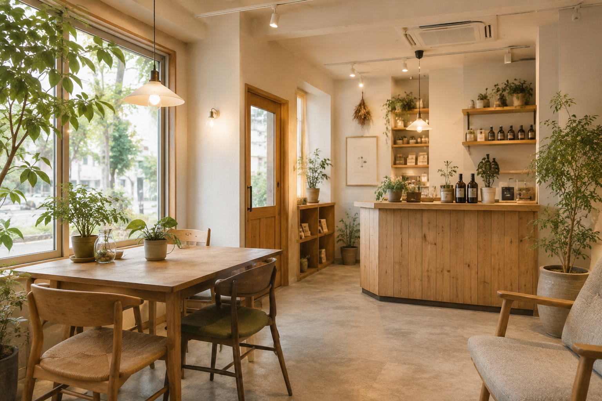
店舗・小規模オフィス改装
居心地と機能性を両立した空間づくり。
施工事例
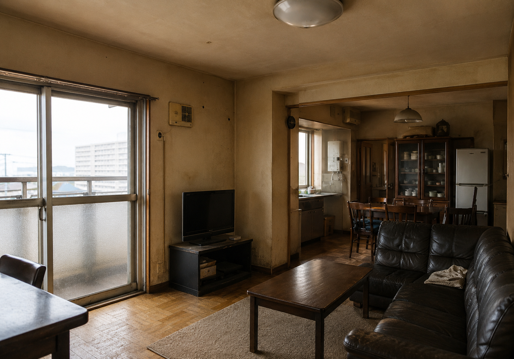
築32年マンションを、光と木のぬくもりが広がる住まいへ
物件種別：マンション 築年数：32年 面積：68㎡
工期：2ヶ月 費用：720万円
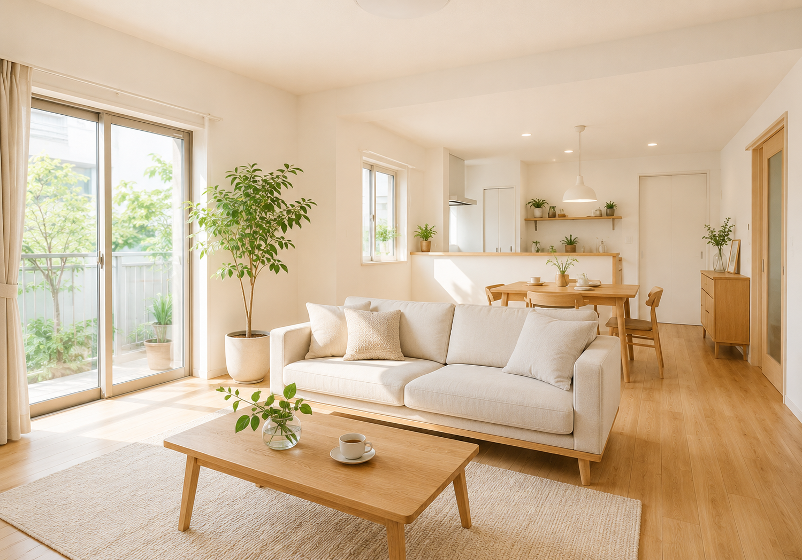
築28年戸建てを、家族が心地よくつながる間取りに
物件種別：戸建て 築年数：28年 面積：105㎡
工期：3ヶ月 費用：980万円
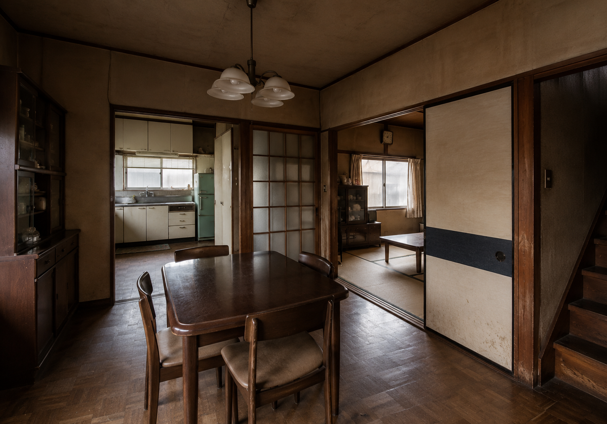
自然素材で整えた、やさしい空気の北欧テイストな住まい
物件種別：マンション 築年数：21年 面積：75㎡
工期：2.5ヶ月 費用：860万円
選ばれる理由
自然素材を活かしたシンプルなデザイン
設計提案見積もり内容をわかりやすく説明
見積書設計から施工まで一貫対応
契約書生活動線・収納計画まで丁寧に提案
プラン図面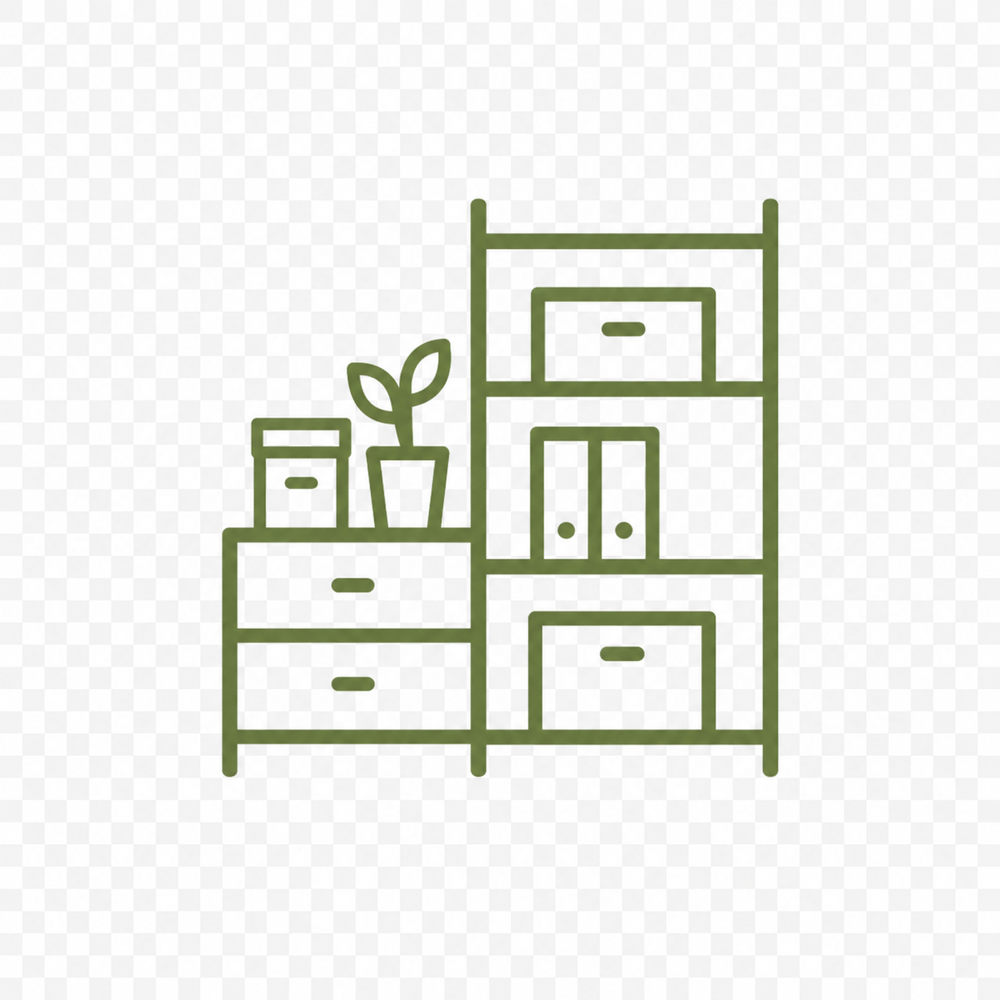
工事後のアフターサポート
アフターサービス保証・保険制度もご案内
保証書費用の目安
| 水回りリフォーム | 80万円〜 |
| 部分リノベーション | 150万円〜 |
| マンション全面リノベーション | 600万円〜 |
| 戸建て全面リノベーション | 900万円〜 |
建物の状態や工事範囲、使用する素材によって費用は変動します。まずは現地調査とヒアリングを行い、無理のない予算計画をご提案します。
ご相談から完成までの流れ
- お問い合わせ
- 初回相談
- 現地調査
- プラン・概算見積もり
- 詳細設計・正式見積もり
- ご契約
- 着工
- お引き渡し
- アフターサポート
よくある質問
相談だけでも可能ですか？
はい。暮らしのイメージ整理からお気軽にご相談ください。
中古物件を買う前に相談できますか？
可能です。リノベ向きかどうかも確認します。
工事期間はどれくらいですか？
内容により異なりますが、部分工事は数日から、全面リノベは2〜4ヶ月が目安です。
住みながら工事できますか？
範囲によって可能です。水回りや全面工事は仮住まいをご案内する場合があります。
見積もりは無料ですか？
初回相談・概算見積もりは無料です。
自然素材はメンテナンスが大変ですか？
素材ごとの特徴とお手入れ方法を丁寧にご説明します。
会社情報
| 会社名 | mori no sumika renovation |
|---|---|
| 所在地 | 〒154-0012 東京都世田谷区駒沢9-1-XX |
| 代表者 | 山田 太郎 |
| 事業内容 | 住宅・マンションのリノベーション、リフォーム、設計施工 |
| 対応エリア | 東京都・神奈川県・埼玉県・千葉県（一部地域除く） |
| 営業時間 | 9:00〜18:00（土日祝も営業・水曜定休） |
mori no sumika renovation
緑の住まいと暮らしの相談室
緑の住まいと暮らしの相談室
まずは、理想の暮らしを聞かせてください。
お話を丁寧に伺い、最適なプランをご提案します。お気軽にご相談ください。